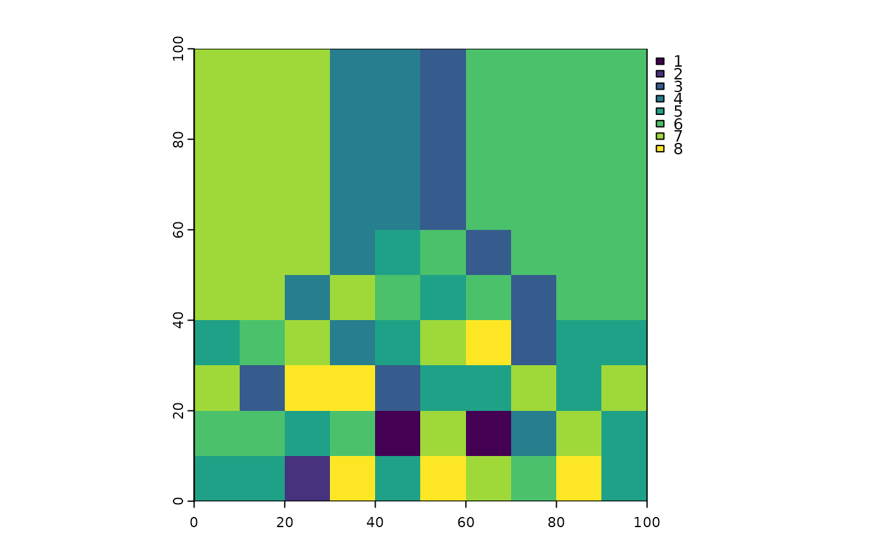

Grow a categorical SpatRaster by certain amount of pixels or distance.
Source:R/spl_growGrid.R
spl_growGrid.RdA common issue in aggregating categorical rasters is that coastal and boundary
gridcells tend to decrease owing to aggregation effects. This can cause issues
of non-matching grid cells later on.
This simple function takes a categorical SpatRaster object and grows it
into no-data areas (those with NA values) within an optionally provided
distance.
Arguments
- x
A categorical
SpatRasterto be grown.- iter
A
numericvalues of the maximum number of iterations from the grid cell border of whichxshould be grown (Default:2).
Examples
set.seed(42)
ras <- terra::rast(ncol = 100, nrow = 100, xmin = 0, xmax = 100,
ymin = 0, ymax = 100, resolution = 10, crs = NA)
# Fill with dummy values but keep half as NA
terra::values(ras) <- c(rep(NA,50),rbinom(terra::ncell(ras)/2, 10, 0.5))
# Convert to factor
ras <- terra::as.factor(ras)
assertthat::assert_that(terra::is.factor(ras))
#> [1] TRUE
ras_nona <- spl_growGrid(x = ras, iter = 10)
terra::plot(ras_nona)
